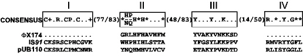

|
 |
| IS91 Alignment
Comparison of the primary transposase sequence with related single strand replicases. The 4 conserved regions are shown boxed and labelled I-IV. They are separated by various numbers of non-conserved amino acids as indicated. In addition to the standard one letter amino acid code, + and * represent basic and hydrophobic amino acids respectively. IS91 is compared to bacteriophage fX174 and plasmid pUB110 replication proteins |